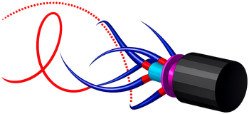

Mechanics first
Models grounded in geometry, kinematics, and continuum mechanics.

GVS RoboticsOpen-source robotics research
We build computational tools for soft and hybrid robotics—spanning differentiable contact, continuum mechanics, simulation, and planning.
Research software designed to move from mathematical formulation to practical integration.
We focus on formulations that preserve physical meaning while exposing the derivatives, speed, and robustness needed by modern optimizers and learning systems.
Models grounded in geometry, kinematics, and continuum mechanics.
Analytical derivatives for simulation, planning, and optimization.
Clear APIs, reproducible examples, and open implementations.